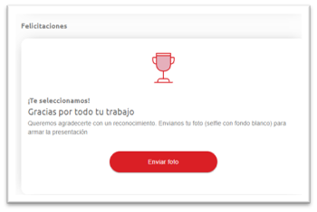

Mi Andreani
Objetivos y alcance
El objetivo de este documento es entregar una especificación de la aplicación Mi Andreani. Por cada sección de la aplicación se realizará el desarrollo de funcionalidad y el proceso de consumo de datos de esta.
Definiciones
Al ingresar a la aplicación, se procede al login
● Login: Es una autenticación en común para varios sistemas, es decir, si el usuario posee cuenta de @andreani.com automáticamente podrá realizar el login con dicha cuenta. Pero si no posee cuenta @andreani.com le pedirá que cree una cuenta y chequea en Dynamics mediante el traspaso de información en la API que exista un colaborador con DNI, por lo cual, si el DNI ingresado machea con el DNI de algún colaborador cargado en Dynamics lo que hace es linkear esas dos cuentas. Ahora, si el DNI ingresado no corresponde a ningún colaborador, no permite crear la cuenta informando que no es un Usuario que pertenece a Andreani. Esto se lleva a cabo para guardar las declaraciones juradas y tener un contacto a quien asignarla.
● Test de Covid-19:
A nivel funcional es un test que debe realizar el usuario para determinar si está APTO o NO APTO para ingresar a la planta, es decir, si presenta síntomas de Covid o tuvo algún contacto estrecho. En primer lugar, debe indicar la temperatura corporal y si tomó algún medicamento para bajar la temperatura

El usuario no estará apto si la temperatura es mayor a 37.3° o tomó algún medicamento Luego debe responder una serie de preguntas y requerimientos: - Identificar si presenta determinados síntomas de Covid-19
Si presenta al menos 2 síntomas el usuario no estará apto para ingresar a planta. - Si tuvo contacto Riesgoso

Si el usuario estuvo en contacto fuera del ámbito laboral con algún sospechoso o si alguien con quien convive estuvo en contacto con algún sospechoso no podrá ingresar a planta. - Confirmación de datos personales

- En qué domicilio estuvo el día anterior, esta información es requerida porque en caso de que el usuario no esté apto para ingresar a trabajar, los médicos deberán recibir dicha información del Backend para comunicarse con él o bien acercarse al domicilio en el cual se encuentre para proseguir con el protocolo ante dicha situación.

- Confirmar información personal

Esta información será alojada y analizada en el Backend, de modo que éste determinará si el usuario está APTO o NO APTO para ir a trabajar a través de la tarjeta visualizada en la sección correspondiente de la aplicación
● Premiacion: En agradecimiento al Trabajo llevado a cabo por el usuario, en el home se puede visualizar una sección que premia al usuario con una fotografía que el mismo deberá subir, ingresando a “enviar foto”
De este modo, la aplicación lo redirecciona a WhatsApp Web en caso de que esté navegando en la Web y en caso de que esté en la aplicación mediante la versión Mobile le abrirá la aplicación nativa de WhatsApp del dispositivo. En ambas situaciones le mostrará un mensaje predefinido para iniciar la conversación, en dicho mensaje habrá información del usuario tomada del Backend en el cual se habían adjuntado los datos del login.

● 75 años – Conectamos lo que importa: Esta sección hace referencia al Aniversario de Andreani, en la cual los usuarios podrán ingresar a “conocer más”
De esta manera podrá visualizar la landing de la aplicación y su contenido estático, es decir, imágenes, videos
y texto. Además, allí encontrarán desplegado el concurso de fotos y la sección videos testimonio.
A partir de la incorporación de la tarjeta de 75 años para dirigirse a la landing se integró un CMS, es decir un
gestor de contenido. Dicho CMS brinda la posibilidad de que haya un usuario que pueda ir cargando contenido por
sección (textos, imágenes, videos, estructura de cómo tiene que ser la aplicación). Desde el frontend, la
aplicación de Mi Andreani, se consumen servicios que el CMS expone, es decir, esa es la interfaz de comunicación
que hay entre CMS y la aplicación frontend para mostrar los contenidos estáticos que se ven en la aplicación.
Entonces, en la landing toda la estructura y todos los contenidos estáticos están definidos en el CMS, es decir,
todo lo que se pueda visualizar consume datos del CMS.
Del lado del CMS lo que se hace es definir una sección que en la aplicación se traduce como una vista, entonces a
medida que los usuarios navegan en la aplicación se irá consumiendo el contenido de cada sección y de alguna forma
se va pintando en el frontend según maquetados y estilos que se definan.
En conclusión, este sistema CMS se encarga de definir cómo tiene que ser estructurado el contenido y qué contenido
tiene que verse, y, por otro lado, está presente el sistema de Mi Andreani que es la aplicación frontend que va a
comunicarse con el CMS a través de una interfaz e irá creando las distintas pantallas.
● Agregar Stickers a WhatsApp:
Dentro de la sección 75 años hay una subsección que le permite al usuario que esté conectado desde la versión
Mobile de la aplicación añadir stickers a WhatsApp referidos a la empresa. Esto es posible debido a que la
aplicación en dispositivos móviles se instala como si fuese una aplicación nativa, lo cual es parte de una
tecnología que está planteada en el frontend que te permite tener una simulación de aplicación nativa y aprovechar
distintas capacidades del dispositivo.
● Funcionalidad técnica de la API:
Nos envían
- (contact > new_DNIcolaborador)
Le devolvemos
- Si hay un colaborador con ese DNI, le enviamos
- (anrrhh_declaracionjuradacovid > anrrhh_EstaApto)
- (anrrhh_declaracionjuradacovid > anrrhh_Fechadevencimiento)
- (contact > fullname)
- (contact > emailaddress1)
- (contact > new_tipodecontacto)
- (contact > new_sector)
- (contact > mobilephone)
- Si no hay un colaborador con ese DNI, le enviamos algún codigo de error o inexistente.
Nos envían
{
temperatura: 36,
- anrrhh_declaracionjuradacovid
- anrrhh_temperaturacorporal (número decimal con 2 decimales)
medicacion: false,
- anrrhh_declaracionjuradacovid
- anrrhh_tomomedicamentos (optionset)
- Sí → 785.630.000
- No → 785.630.001
- anrrhh_tomomedicamentos (optionset)
sintomas: {
tos: false,
- anrrhh_sintomatos (optionset)
- Sí → 785.630.000
- No → 785.630.001
dolorGarganta: false,
- anrrhh_sintomadolordegarganta (optionset)
- Sí → 785.630.000
- No → 785.630.001
dificultadRespiratoria: false,
- anrrhh_sintomadificultadrespiratoria (optionset)
- Sí → 785.630.000
- No → 785.630.001
perdidaOlfato: false,
- anrrhh_sintomaperdidadeolfato (optionset)
- Sí → 785.630.000
- No → 785.630.001
perdidaGusto: false
- anrrhh_sintomaperdidadegusto (optionset)
- Sí → 785.630.000
- No → 785.630.001
},
contactoRiesgoso: false,
- anrrhh_contactoprimergrado (optionset)
- Sí → 785.630.000
- No → 785.630.001
contactoRiesgosoIndirecto: false,
- anrrhh_contactosegundogrado (optionset)
- Sí → 785.630.000
- No → 785.630.001
verificacionDatos: false,
- anrrhh_datoscorrectos (optionset)
- Sí → 785.630.000
- No → 785.630.001
Domicilio Actual
domicilioActual: {
provincia: '',
- anrrhh_domicilioactual_provinciatexto (texto 1000 caracteres)
localidad: '',
- anrrhh_domicilioactual_localidad (texto 1000 caracteres)
codigoPostal: '',
- anrrhh_domicilioactual_cp (número entero)
calle: '',
- anrrhh_domicilioactual_calle (texto 1000 caracteres)
numero: '',
- anrrhh_domicilioactual_altura (número entero)
piso: '',
- anrrhh_domicilioactual_piso (número entero)
departamento: '',
- anrrhh_domicilioactual_departamento (texto 100 caracteres)
datosAdicionales: ''
- anrrhh_domicilioactual_obs (texto 1000 caracteres)
},
unidadDesinfectada: false,
- anrrhh_desinfectounidad (optionset)
- Sí → 785.630.000
- No → 785.630.001
Le devolvemos
anrrhh_declaracionjuradacovid
→ anrrhh_EstaApto
→ anrrhh_Fechadevencimiento